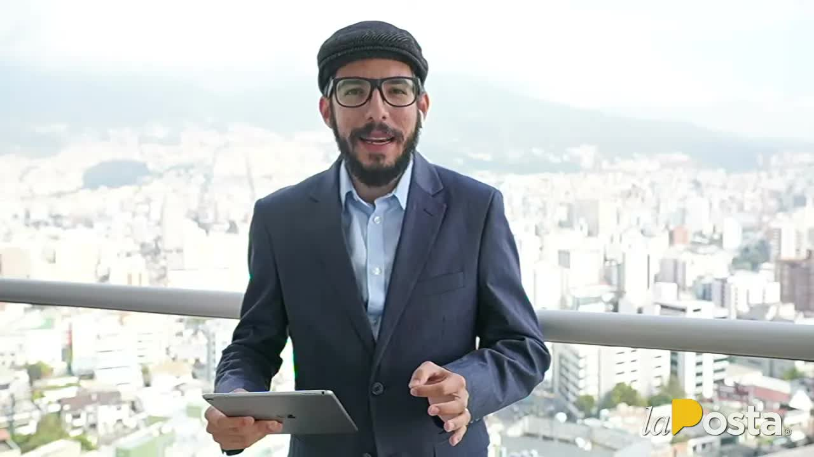
Café · The list, part one
The first 8,190 COVID vaccine doses arrived on January 20, 2021, for frontline doctors and elderly people in nursing homes. Forty-eight hours later, the first lady was getting vaccinated at Carondelet, along with ministers, former presidents, consultants and the health minister's mother. The minister admitted that people had jumped the line and refused to give their names. La Posta reconstructed them, hospital by hospital, and published them in two parts: the first brought down the new minister that same day.
The first 8,190 Pfizer doses landed in Ecuador on January 20, 2021. Lenín Moreno's government plan had a phase zero: frontline health workers and older adults in nursing homes. But the Health Ministry, headed by Juan Carlos Zevallos, had no database of who should be vaccinated. It sent letters to public hospitals, private hospitals and Social Security hospitals asking each to send a list of those it believed should receive the vaccine. That is where the problem began: the hospitals included whoever they wanted.
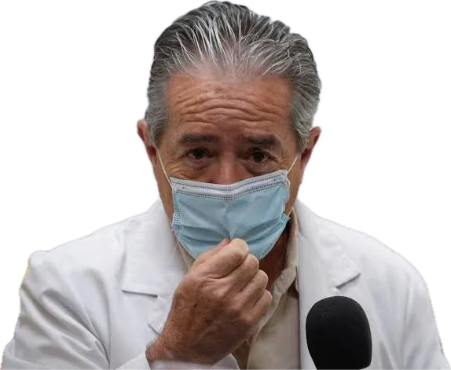
There was a second detail. Ecuador has a National Vaccine Bank with 45 years of mass campaigns and proven protocols. The Ministry decided not to use it and to store the doses at the Chimbacalle health center in Quito. La Posta's sources maintain that this was deliberate: it is easier to pressure the nurses at a health center into diverting vials than to do so with the Vaccine Bank. And a third: the computer system where doses were recorded lumped the COVID vaccine together with measles or influenza vaccines, without distinguishing them, which later complicated any investigation. The scheme worked by zones: each zone director knew about the racket in his own zone, and no one knew the whole picture.
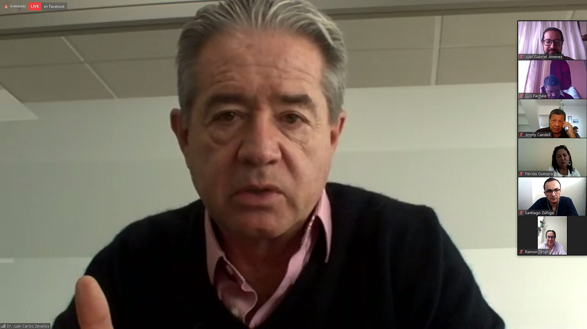
On January 22, forty-eight hours after the rollout began, the first lady, Rocío González de Moreno, an assistant and a Presidency staffer received their doses at Carondelet Palace, with one extra vial: six doses for six people the government never identified and described as staff of the presidential residence, as an epidemiological buffer. That same day five ministers and two deputy ministers entered with their spouses through the basement of the Pablo Arturo Suárez hospital to a doctor's office: Jarrín, Mauricio Pozo, René Ortiz, Julio Recalde, Rosa Prado de Holguín, Zevallos and his deputy minister Rodolfo Farfán. On January 23, at the Los Valles suites and at the Senior Suites residence where the minister's mother lived, former president Osvaldo Hurtado, political consultant Jaime Durán Barba and his brother Rodrigo, former finance minister Pablo Better, lawyers and businesspeople, and Zevallos's mother and mother-in-law were vaccinated; of 28 people vaccinated at Los Valles, only 14 were doctors or nurses. In mid-February, four extra doses at the Hospital Metropolitano went to the in-laws of Teleamazonas's general manager and a close associate. On February 25, at Chimbacalle, broadcasters Gonzalo Rosero, Diego Oquendo and Emilio Najas and sports executive Rodrigo Paz with his wife were vaccinated, with a list of fifteen names signed by a businesswoman on the public-private committee who had access to public vials. The minister admitted that people outside the priority groups had been vaccinated. He refused to say who. He resigned on February 26 and flew to Miami the next day.
The Ministry had skillfully mixed those who deserved the vaccine, nurses and doctors at health centers, with its guests. There was no file with a hundred thousand vaccinated people. La Posta reconstructed the list based on the places where the doses were administered and on what directors and doctors who cooperated anonymously remembered, with supporting documents. Two workdays lasting until three in the morning to identify each name. La Posta decided not to publish the full list: it separated the VIPs from those who were entitled to the vaccine.

The first part came out on March 19, 2021, with Boscán and Jefferson Sanguña in the studio and Mónica Velásquez on the team that identified each name until three in the morning. At least twelve Cabinet officials and their relatives, former president Hurtado, Durán Barba, who by then was advising Guillermo Lasso's campaign, presidential assistant Fredy Miño, adviser Liz Giler, presidential security chief Carlos Sarmiento, businesspeople, academics and sports executive Rodrigo Paz. Also those who did not get the vaccine: the Emaseo garbage collector, the Guayaquil firefighter-paramedic, two lab technicians who lost relatives. Vice President María Alejandra Muñoz had said the day before that anyone who jumped the line had to be removed. Moreno had said that none of his relatives, not even his parents, had been vaccinated. He did not mention his wife. That same day the government removed Minister Rodolfo Farfán, who had been in office for 19 days and appeared on the January 22 list as deputy minister; Cabinet Secretary Jorge Wated asked all ministers to report within six hours whether they had been vaccinated, and on Saturday the 20th he published the list.
First lady
Jan 22, 2021 · Carondelet Palace, second dose on February 18
Forty-eight hours after the first shipment landed. That day an extra vial was used: six doses for six people the government never identified and described as staff of the presidential residence.
On the night of March 18 he said that no one in his family circle, not even his parents, had been vaccinated. He did not mention his wife. His government minister later justified it: the wife obviously has to get vaccinated.
Senior Suites residence, Ribera del Río
Jan 23, 2021
The Comptroller General's Office counted 36 doses from the Pablo Arturo Suárez hospital administered in that building, among nine residents and nine workers.
Admitted that people outside the priority groups had been vaccinated and refused to say who. He resigned on February 26 and flew to Miami the next day. From the United States he spoke of perhaps a mistake in inviting people and of a political and media lynching.
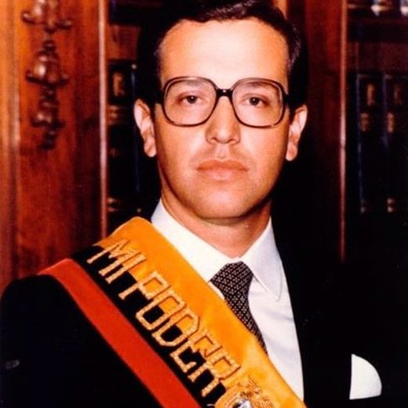
Former president of the Republic
Jan 23, 2021 · Hospital de los Valles
Of 28 people vaccinated at Los Valles that day, only 14 were doctors or nurses.
The government invited former presidents, candidates and 17 university rectors; the investigation has to end with the case being shelved.
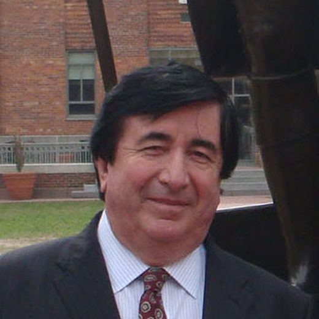
Political consultant
Jan 23, 2021 · Hospital de los Valles
By then he was advising Guillermo Lasso's presidential campaign.
Could not explain why 15,000 names were handed to the Attorney General's Office if 87,000 people had been vaccinated; said the lists are not published because the Constitution prohibits it and that there was talk of 10 or 15 questionable people.
Defense minister
Jan 23, 2021 · Hospital de los Valles
The Comptroller General's Office counted 15 doses for eight ministers and their spouses and 18 for twelve Presidency officials.
The Cabinet's vaccination followed WHO recommendations. Carondelet has no cooks: three people from the presidential residence were vaccinated as an epidemiological buffer. The vice president learned of the lists from the press.
Deputy health minister and later minister for 19 days
Jan 22, 2021 · Pablo Arturo Suárez
He appeared as deputy minister on the January 22 list. On March 19, hours after the first installment, the government removed him from office: the publication brought down the health minister that same day.
Only Carondelet could authorize a VIP vaccination through the minister; the Vice Presidency was informed of all the logistics. His father, an 87-year-old doctor, had not been vaccinated.
Photos via Wikimedia Commons. Osvaldo Hurtado: Enciclopedia del Ecuador (CC0); Jaime Durán Barba and his brother Rodrigo: Gobierno de la Ciudad de Buenos Aires (CC BY 2.0).
The second part came on March 22: the full list from the mass vaccination at the Guayaquil Rotary Club, more than 500 names from Guayaquil high society, almost a fifth of them under 65 and about ten born between 1991 and 1999, including former vice president León Roldós, a former government minister, a former high court judge and university administrators; the Rotarians asked for a thousand doses and received five hundred while the Teodoro Maldonado Carbo hospital did not get even half that. The next day La Posta corrected two names and the Ministry opened an investigation into identity theft: being on the list was not the same as being vaccinated. On the 23rd came the audio: Gabriela Gómez, Zevallos's legal adviser, and the medical director and general manager of the Pablo Arturo Suárez, recorded the day after the minister resigned: do we say it or not; no; I did what I did on your verbal orders; the ministers' vaccination is a request from the office of the Presidency; the vice president already knows about this. On the 24th, Government Minister Gabriel Martínez came on to respond: he could not explain why they handed 15,000 names to the Attorney General's Office if 87,000 people had been vaccinated. On the 25th, Rafael Tamayo, former adviser to Zevallos: only Carondelet could authorize a VIP vaccination, and the Vice Presidency was informed of all the logistics. The Ombudsman asked the Attorney General's Office to investigate. Farfán's replacement, Mauro Falconí, lasted 19 days: he resigned on April 7 after the chaos of the vaccination of older adults in Quito, called for a notarized vaccine count because the numbers did not add up, fired the zone directors and, on Café La Posta, pointed to the committee chaired by Vice President María Alejandra Muñoz, with CNT general manager Martha Moncayo, as the one that broke the plan's technical criteria.
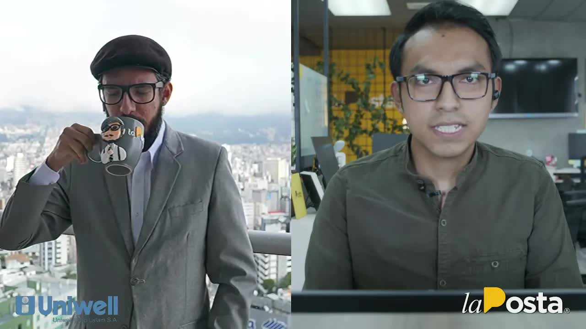
Very skillfully, Juan Carlos Zevallos's Health Ministry mixed people who really did deserve the vaccine, the nurses, the frontline doctors, with its VIP guests.
Andersson Boscán, Café La Posta, March 19, 2021
In June 2021 the Comptroller General's Office published its special audit of the vaccination process between August 1, 2020, and March 17, 2021, and confirmed the essentials: 67 people outside the priority groups were vaccinated in phase zero. At the Pablo Arturo Suárez hospital in Quito, of 450 doses only 285 went to frontline staff; 102 were handed out at discretion among 56 people, and 36 went to nine residents and nine workers at the Senior Suites residence in Ribera del Río, where Zevallos's mother lived.
According to the report, 15 doses went to eight ministers and their spouses and 18 to twelve Presidency officials; La Posta had placed the Cabinet in the basement of the Pablo Arturo Suárez. At the Carlos Andrade Marín hospital, administrative staff were vaccinated, including the communications director. The report did not reveal all the names. La Posta had already published them.
The Attorney General's Office opened preliminary inquiry 04-2021 on January 29, 2021, for influence peddling, following a complaint filed on January 26; on March 17 it raided a Ministry office in southern Quito after asking three times for the list without receiving it in full. Zevallos gave a statement on February 1. The complainants asked for measures to prevent him from leaving the country; none were ordered, and he left on February 27 with no legal impediment, as his lawyer pointed out. On March 22, from the United States, he responded with a statement: he admitted perhaps a mistake in inviting people and spoke of a political and media lynching. He was never formally linked to the case. On May 5, 2021, the National Assembly censured him with 129 votes and barred him from public office for two years over failures in the vaccine purchases and the plan. By September 2022 he was back in Ecuador giving lectures.
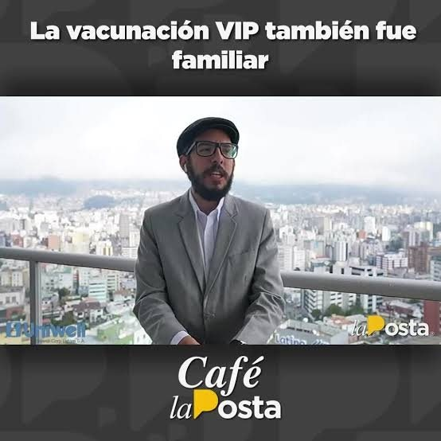
La Posta also revealed what the confidential contracts said. AstraZeneca, signed on October 28, 2020, by Zevallos: five million doses at 4 dollars, adjustable upward to 6, with no penalty for missing the schedule and with the government responsible for the vaccines' shelf life. The company had committed 390,000 doses in March, 770,000 in April, 770,000 in May and 710,000 in June 2021; by June 21 it had delivered 614,000, 25 percent. Pfizer, signed on December 23, 2020: two million doses at 2 dollars, also with no penalty for delays; it had shipped 1.4 million. By the end of June, 4,814,989 vaccines of all brands had arrived in the country and 1,681,602 had still not been administered. On March 25 the Ministry announced an agreement with the Guayaquil municipality for access to 1.8 million doses, which Zevallos and Farfán had refused to sign.
None of the VIP vaccine recipients was sanctioned. The vice president who called for them to be removed removed no one; her name came up in the audio, in Tamayo's account and in Falconí's, and she denied it: she learned of the lists from the press. Moreno's government ended on May 24, 2021, with Camilo Salinas as its sixth health minister; Zevallos, Farfán and Falconí fell within six weeks. In four months Moreno administered 1.9 million vaccines; Lasso, 1.2 million in his first four weeks. Alfonso Espinosa de los Monteros, the news anchor, waited five hours in line for his.
Updated September 5, 2026
8,190 Pfizer doses.
The first lady at Carondelet; the Cabinet through the basement of the Pablo Arturo Suárez; Hurtado, Durán Barba and the minister's mother at Los Valles.
Broadcasters and politicians get the leftover vials, according to a list signed by a businesswoman.
A complaint for influence peddling is filed against Zevallos.
The Attorney General's Office opens case file 04-2021.
He will never be charged.
He resigns on Friday; on Saturday he flies to Miami.
The Attorney General's Office enters a Ministry office in southern Quito.
Two dozen names verified on Café La Posta. The government removes Minister Farfán that day.
The full Rotary Club list: more than 500 names. Zevallos speaks of a lynching.
The third minister in six weeks. He points to the vice president's committee.
129 votes and a two-year ban from office.
67 people outside the priority groups.
Gives lectures in Ecuador. No proceedings.
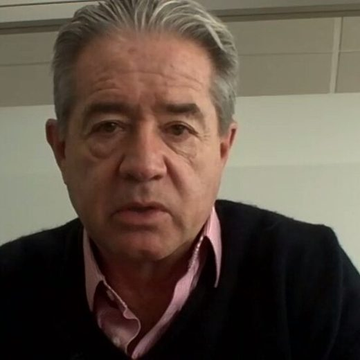
Health minister until February 2021.
First lady.

Defense minister.
Zevallos's successor at the Health Ministry.
Vice president. Called for anyone who jumped the line to be removed.
Health minister for 19 days.
Photos via Wikimedia Commons. Juan Carlos Zevallos: Asamblea Nacional del Ecuador (CC BY-SA 2.0); Rocío González de Moreno: LasManuelas2018 (CC BY-SA 4.0); Oswaldo Jarrín: https://www.flickr.com/photos/asambleanacional/42280117082/ (CC BY-SA 2.0).
On the night of March 18 he said that no one in his family circle, not even his parents, had been vaccinated. He did not mention his wife, vaccinated on January 22 at Carondelet. He later said that in the previous 72 hours he had come to think there was a plot. His government minister justified it: the wife obviously has to get vaccinated.
Admitted vaccinations outside the priority groups and refused to disclose the names. Resigned and left the country.
Asked the Attorney General's Office to investigate the list revealed by La Posta.
Carondelet has no cooks; three people from the presidential residence were vaccinated as an epidemiological buffer. The Cabinet's vaccination followed WHO recommendations. The vice president learned of the lists from the press.
Could not explain why 15,000 names were handed to the Attorney General's Office if 87,000 people had been vaccinated; the lists are not published because the Constitution prohibits it. We're talking about 10 or 15 questionable people.
His client did not flee: there was no ban on his leaving the country. The government invited former presidents, candidates and 17 university rectors; the investigation has to end with the case being shelved.
Only Carondelet could authorize a VIP vaccination through the minister; the Vice Presidency was informed of all the logistics. His father, an 87-year-old doctor, had not been vaccinated.
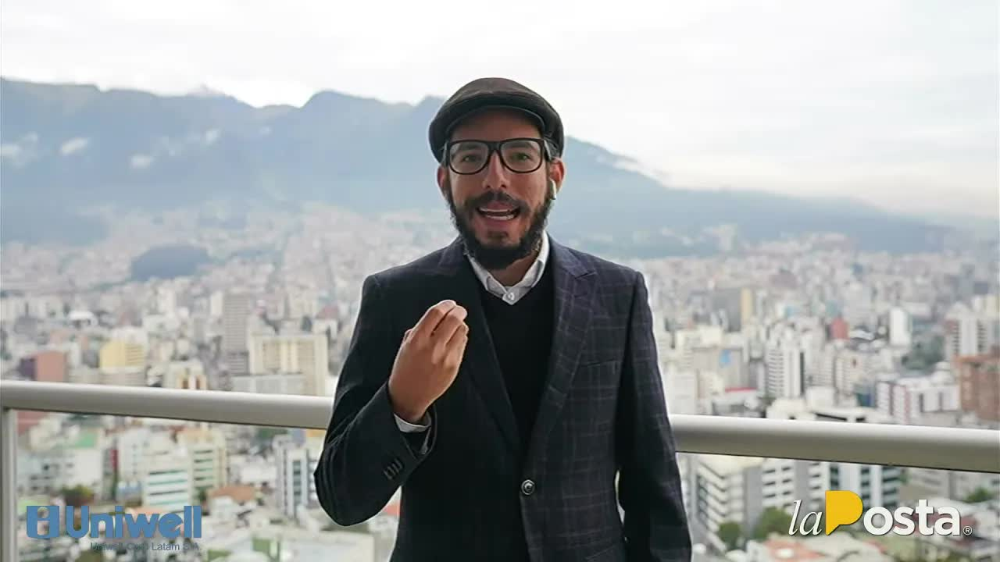
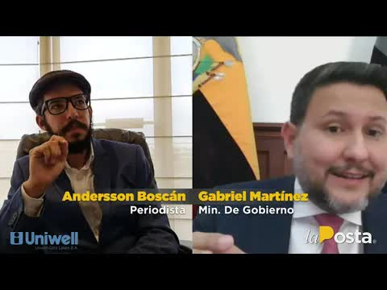
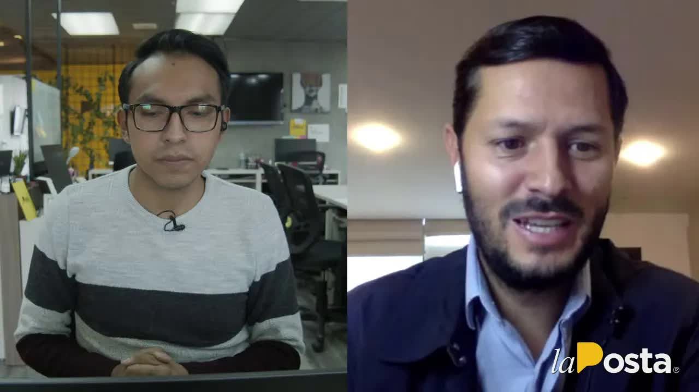
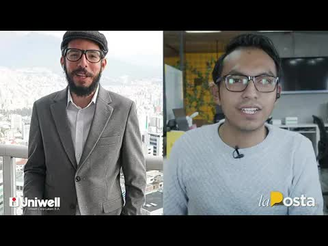
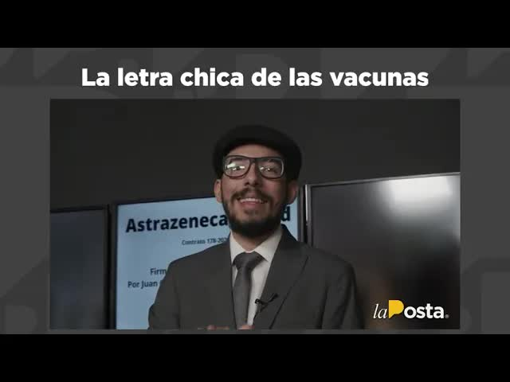
the public has been looking for since the vaccination process began on january 21 and that has finally started to trickle out from the la posta newsroom joining me and expresión sanguña jeff very good morning to all of you very good morning that's right we've been able to access a first part of the list of vip vaccine recipients which we published for you yesterday and which we promised you as…
Read the full transcriptfor since june 2021 artefacta makes your life easier so now you know the best discounts are at artefacta and take advantage of those incredible offers and discounts through today visit all their stores without further ado a promise is a promise so we're going to do a review do a review but the second part of the vaccine recipients this is hot off the press thank you so much for staying tuned to la posta's signal I'm jeff…
Read the full transcriptthe list of vaccine recipients the problem is that they're on the list but they're the list is not the same as being vaccinated apparently this seems inconceivable and I want to explain it well la posta hasn't only had access to the vaccination order let's put up the image I'd call these are the people we were referring to the chancellor of the casa grande university the former government minister the first board member of club sport emelec…
Read the full transcriptof course you're here because there's a list of those who have been vaccinated so we're going to get straight into the subject in our martínez the vaccination plan what rating does it deserve from 1 to 10 how badly has the national government put its foot in it I think there are regrettable mistakes there are regrettable mistakes that have to be corrected I think it's the responsibility of the previous ministers the situations that…
Read the full transcriptwithout further ado and while we try to solve the technical problems with anderson we're going to do a review of the news this is hot off the press hot off the press hot off the press we'll tell you well the first news item comes thanks to sánchez garcía y asociados the tax law firm that lets the whole la poste team rest easy and not have any trouble with it that was the first news item it has to do with the presiden…
Read the full transcriptto the cattle ranchers let's go to the next news item and it has to do with this controversy over the process of registering for the vaccines for the vaccination of senior citizens and this has stopped being funny it's outrageous now because the president lenin moreno was giving one of his usual face to face with the president programs which has nothing face to face about it because little or nothing can be seen that of co…
Read the full transcriptall the media because of everything that happened regarding the we're going to do a chronological event but this was what was happening so that a series of events unfolds that would end with the resignation of the now former minister mr. mauro falconí let's see the first video we put on screen and then we'll talk about it ah after 4 in the afternoon this was one of the many videos that c…
Read the full transcriptthings so let's see how many vaccines we've administered and who has administered more vaccines under lenin moreno's government 1 million 946 346 vaccines were administered under guillermo lasso's government 1,187,000 41 vaccines ok lenin administered more vaccines than lazó over more time than las because we're comparing four months of lenin moreno against four weeks of guillermo lasso although also yes but with the latest update…
Read the full transcriptTranscripts from each show's automatic captions. They have not been corrected by hand: use them to find a phrase and jump to the exact minute in the video, not as verbatim quotes.
Farfán fell on the day of the first installment; Falconí, 19 days later.
Zevallos returned to the country. No VIP vaccine recipient was sanctioned.
The 45 seconds of the COSEPE meeting that contradicted the president during the kidnapping of three journalists
2019Faulty HIV tests and rotten purchases at the Health Ministry
2020Public hospitals in exchange for votes in the National Assembly
The full Rotary Club list was published on La Posta's social media on March 22, 2021, without ID numbers or medical histories. Reproduced here are the names the shows gave on air and that the national press confirmed.